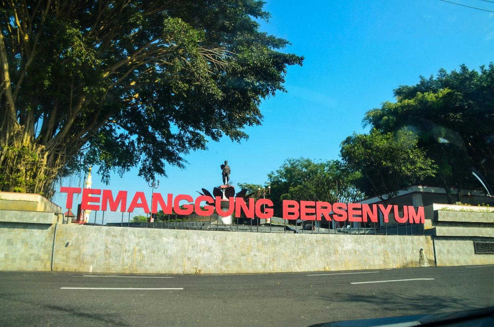
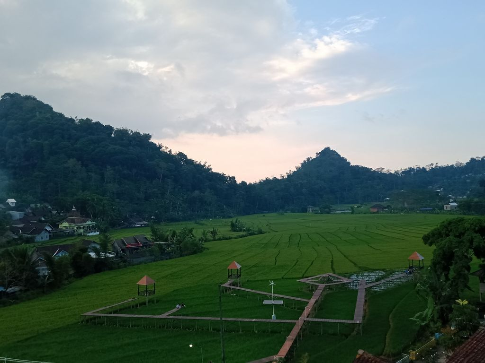
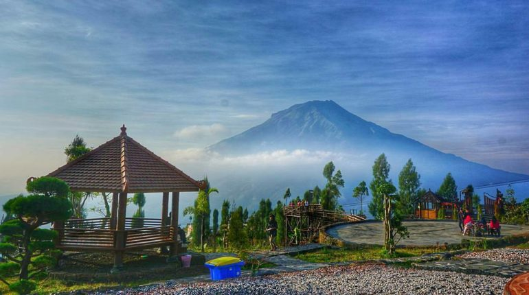
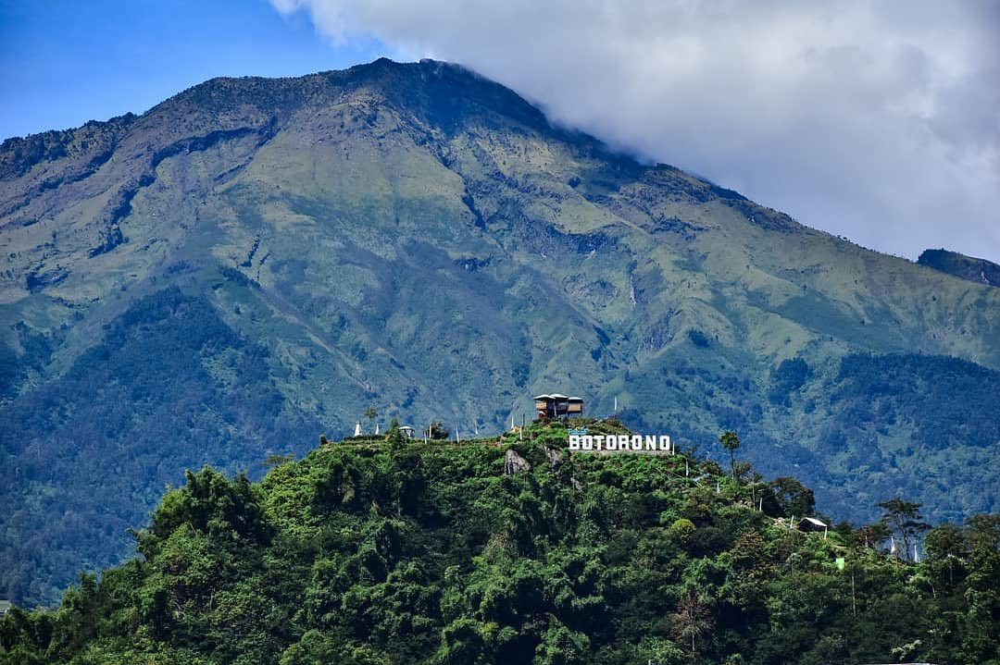
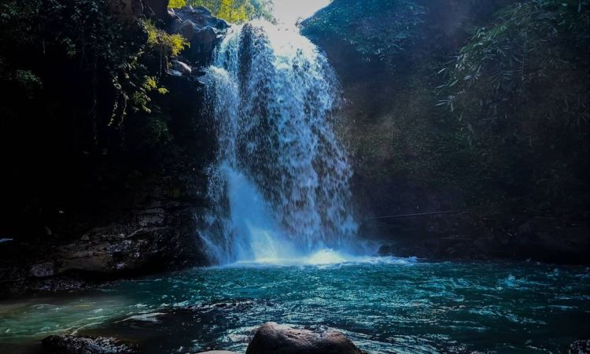

Sejarah

Sejarah Temanggung mulai tercatat pada Prasasti Wanua Tengah III Tahun 908 Masehi yang ditemukan penduduk dusun
Dunglo Desa Gandulan Kecamatan Kaloran Temanggung pada bulan November 1983. Prasasti itu menggambarkan bahwa Temanggung
semula berupa wilayah kademangan yang gemah ripah loh jinawi dimana salah satu wilayahnya yaitu Pikatan. Disini didirikan
Bihara agama Hindu oleh adik raja Mataram Kuno Rahyangta I Hara, sedang rajanya adalah Rahyangta Rimdang (Raja Sanjaya)
yang naik tahta pada tahun 717 M (Prasasti Mantyasih). Oleh pewaris tahta yaitu Rake Panangkaran yang naik tahta pada
tanggal 27 November 746 M, Bihara Pikatan memperoleh bengkok di Sawah Sima. Jika dikaitkan dengan prasasti Gondosuli ada
gambaran jelas bahwa dari Kecamatan Temanggung memanjang ke barat sampai kecamatan Bulu dan seterusnya adalah adalah wilayah
yang subur dan tenteram (ditandai tempat Bihara Pikatan).
Dari buku sejarah karangan I Wayan badrika disebutkan bahwa Rakai Pikatan selaku raja Mataram Kuno berkeinginan menguasai wilayah
Jawa Tengah. Namun untuk merebut kekuasaan dari raja Bala Putra Dewa selaku penguasa kerajaan Syailendra tidak berani. Maka untuk
mencapai maksud tersebut Rakai Pikatan membuat strategi dengan mengawini Dyah Pramudha Wardani kakak raja Bala Putra Dewa dengan
tujuan untuk memiliki pengaruh kuat di kerajaan Syailendra. Selain itu Rakai Pikatan juga menghimpun kekuatan yang ada di wilayahnya
baik para prajurit dan senapati serta menghimpun biaya yang berasal dari upeti para demang. Pada saat itu yang diberi kepercayaan untuk
mengumpulkan upeti adalah Demang Gong yang paling luas wilayahnya. Rakai Pikatan menghimpun bala tentara dan berangkat ke kerajaan syailendra
pada tanggal 27 Mei 855 Masehi untuk melakukan penyerangan. Dalam penyerangan ini Rakai Pikatan dibantu Kayu Wangi dan menyerahkan wilayah
kerajaan kepada orang kepercayaan yang berpangkat demang. Dari nama demang dan wilayah kademangan kemudian muncul nama Ndemanggung yang akhirnya
berubah menjadi nama Temanggung.
Geografis

Bentuk Kabupaten Temanggung secara makro merupakan cekungan atau depresi, artinya rendah di bagian tengah sedangkan sekelilingnya berbentuk
pegunungan, bukit, atau gunung. Wilayah Kabupaten Temanggung sebagian besar merupakan dataran dengan ketinggian antara 500 – 1450 m di atas
permukaan air laut.
Kabupaten Temanggung memiliki batas wilayah sebagai berikut: Sebelah utara berbatasan dengan Kab. Kendal dan Kab. Semarang,
Sebelah selatan berbatasan dengan Kab. Magelang, Sebelah barat berbatasan dengan Kab. Wonosobo, Sebelah timur dengan Kab. Semarang dan Kab. Magelang.
Berdasakan pembagian administrasinya Kabupaten Temanggung terbagi dalam 20 kecamatan, 266 desa, 23 kelurahan, 1610 Rukun Warga (RW), 5389 Rukun Tetangga
(RT), 1568 dusun, dan 1731 lingkungan. Kecamatan Temanggung merupakan kecamatan dengan jumlah desa/kelurahan terbanyak (6 desa dan 19 kelurahan) sedangkan
Kecamatan Gemawang adalah kecamatan dengan jumlah desa/kelurahan terkecil (10 desa).
Wisata
Temanggung memiliki wisata alam yang tak kalah dengan kabupaten di sekitarnya, mulai dari wisata air terjun di temanggung hingga wisata pendakian gunung yang
sekarang lagi ngetrend di kalangan anak muda jaman sekarang. Oke selanjutnya simak rivew obyek wisata temanggung yang patut anda kunjungi.
Berikut beberapa wisata yang dapat dikunjungi di Kabupaten Temanggung.
Posong

Temanggung juga tidak mau kalah dengan wisata alam kopeng salatiga yang mempunyai pemandangan pegunungan yang
eksotik. Yah tepatnya wisata alam posong temanggung, tempat ini berada di tengah dua gunung yaitu gunung sindoro dan gunung sumbing.
Wisata alam posong ini menyuguhkan pemandangan khas pegunungan yang begitu indah, apabila anda berkunjung ketempat tersebut anda dapat menikmati hamparan
kebun tembakau yang indah. Dan jika sore hari, sunset dari tempat tersebut terlihat begitu sempurna.
Botorono

Botorono merupakan perbukitan yang terletak di kaki Gunung Sumbing. Puncak perbukitan ini berlokasi di Petarangan 2,
Petarangan, Kledung, Kabupaten Temanggung. Tempat wisata ini berjarak 8,1 kilometer dari wisata alam Posong dengan lama perjalanan hampir
30 menit. Di sini, pengunjung dapat melihat panorama Kota Temanggung dari ketinggian dengan pemandangan Gunung Sindoro dan Sumbing. Selain itu,
pengelola tempat wisata Botorono juga menyediakan tempat berfoto sehingga pengunjung bisa mengabadikan momen bersama di tempat tersebut.
Curug Titang

Wisata Curug Titang di Nampirejo Temanggung Jawa Tengah adalah salah satu tempat wisata yang berada di Desa Nampirejo, Kecamatan Temanggung,
Kabupaten Temanggung, Jawa Tengah, Indonesia. Wisata Curug Titang di Nampirejo Temanggung Jawa Tengah adalah tempat wisata yang ramai dengan wisatawan
pada hari biasa maupun hari liburan. Tempat ini sangat indah dan bisa memberikan sensasi yang berbeda dengan aktivitas kita sehari hari.
Wisata Curug Titang di Nampirejo Temanggung Jawa Tengah memiliki pesona keindahan yang sangat menarik untuk dikunjungi. Sangat di sayangkan jika anda
berada di kota Temanggung tidak mengunjungi Wisata Curug Titang di Nampirejo Temanggung Jawa Tengah yang mempunyai keindahan yang tiada duanya tersebut.